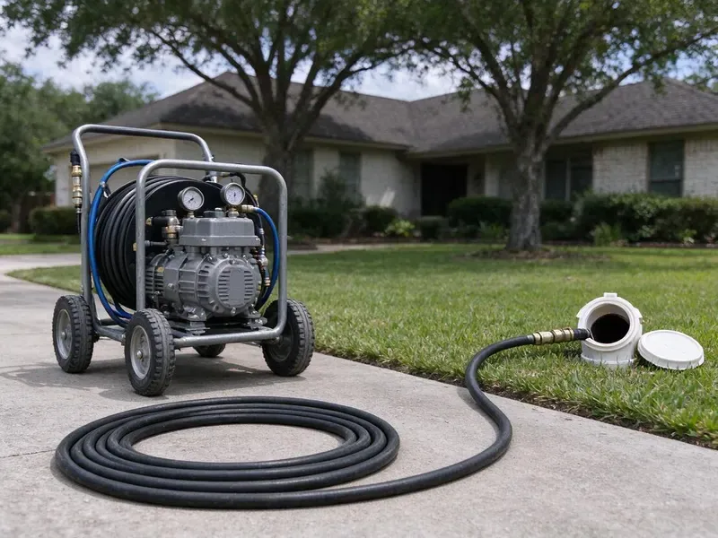
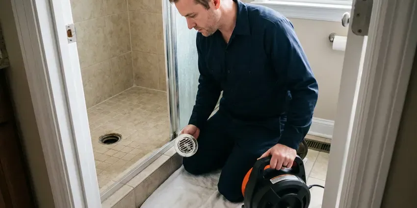
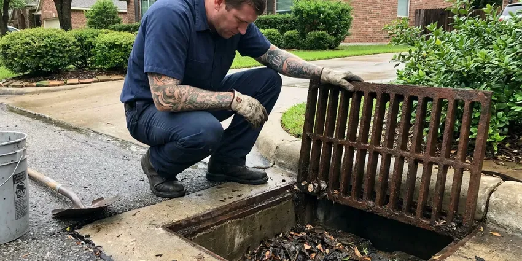

Hydro Jetting in Bridgeport, CT
Tired of the same clog returning? Our Bridgeport, CT jetting crew cleans the entire pipe wall, not just a hole through the blockage.
- Removes Tough Buildup
- Pipe-Safe Pressure Settings
- High-Pressure Technology
- High-Pressure Cleaning

Need Powerful Drain Cleaning in Bridgeport, CT?
Do not let recurring drain issues disrupt your home, contact us for a lasting solution.
Reliable Hydro Jetting Services in Bridgeport, CT
GLV Plumbing provides professional hydro jetting to homeowners and businesses throughout Bridgeport, CT. This advanced cleaning method uses high-pressure water streams to wash out stubborn blockages, grease, scale, and even tree roots from your drain and sewer lines.
Our expertise includes:
- Rotating, root-cutting and penetrating nozzle selection
- Pre and post jetting video inspection with recordings
- Cart and trailer jetters for homes and commercial lines

Additional Drain Services Services in Bridgeport, CT
From stubborn kitchen clogs to main sewer backups, our drain services in Bridgeport, CT restore full flow fast and keep it that way.


Local drain cleaning by GLV Plumbing, Bridgeport


Bridgeport storm drain cleaning specialists


Customers
Why Choose GLV Plumbing for Hydro Jetting in Bridgeport, CT?
Hydro jetting is a better method for truly cleaning your pipes, not just poking a hole through a blockage. It is especially useful for older homes in Bridgeport and for dealing with mineral buildup.
- Full-Wall Cleaning, Jetting scrubs the pipe circumference instead of leaving a thin channel through the clog.
- Eco-Friendly, This method uses only pressurized water, avoiding harsh chemicals that can damage pipes or hurt the environment.
- Tough Blockages, It effectively breaks apart grease, mineral scale, sludge, and even invasive tree roots that snaking cannot fully dislodge.
Citywide Coverage
No matter where you are in Bridgeport, our trained plumbers are ready to bring hydro jetting equipment to resolve your most stubborn drain issues. We are dedicated to keeping drains flowing smoothly throughout the entire Bridgeport, CT area.
Experienced Team
Each technician at GLV Plumbing has the knowledge and tools to handle different types of blockages and pipe diameters, delivering precise and powerful cleaning. You can count on our expertise for your hydro jetting needs in Bridgeport, CT.
Safety-First Approach
Safety and code compliance are paramount in all our hydro jetting work. We strictly follow local plumbing codes in Bridgeport, CT and industry best practices to protect your property and our team. Our equipment is regularly maintained and operated by trained professionals.
Trusted Certified Bridgeport Plumbing Services Professionals
At GLV Plumbing, we take pride in providing licensed, certified plumbing services throughout Bridgeport, CT. Backed by recognized industry credentials, our experienced plumbers combine technical skill with genuine customer care. Whether it is repair, installation, or maintenance, we follow strict safety and quality standards to deliver long-lasting results you can trust.
Call Us Now PHCC Plumbing Contractor Recognition
PHCC Plumbing Contractor Recognition Better Business Bureau (BBB) Accreditation
Better Business Bureau (BBB) Accreditation Angi Certified Pro
Angi Certified Pro ISO 9001 Quality Management Certification
ISO 9001 Quality Management CertificationExpert Hydro Jetting Solutions in Bridgeport, CT
Camera Inspection and Hydro Jetting in Bridgeport, CT
Before performing any hydro jetting, especially for challenging clogs, GLV Plumbing always recommends a thorough sewer camera inspection. This lets us accurately locate the blockage, identify its nature, and assess the condition of your pipes. This crucial step confirms that hydro jetting is the right solution and helps us select the correct pressure and nozzle, safeguarding your plumbing system in Bridgeport, CT.

Preventive Maintenance Jetting in Bridgeport
If your line has a history of clogs, a maintenance plan can keep it clear. We schedule jetting every 12 to 24 months for homes and more often for busy commercial kitchens. Regular cleaning prevents the buildup from ever reaching the point of a backup. It also gives us a chance to camera the line and spot new problems early. Maintenance customers get priority scheduling.
Sewer Line Hydro Jetting in Bridgeport
When your main sewer line has a blockage, it can affect all the drains in your Bridgeport home or business. Our sewer line hydro jetting service is equipped to clear even the most severe obstructions in these larger diameter pipes. We use high-definition cameras to inspect the line before and after jetting, making sure the blockage is completely removed and the pipe is clean. Most homes here have full basements, so sump pumps, floor drains, and foundation seepage are frequent plumbing concerns.
Hydro Jetting Cost Compared to Snaking in Bridgeport, CT
Jetting costs more than a basic cable cleaning on the first visit. However, it often lasts much longer because it removes the coating that causes repeat clogs. If you are paying for snaking several times a year, jetting often costs less over time. We give you both prices and our straight view on which fits your line. For simple soft clogs, a cable may be all you need.
Emergency Hydro Jetting in Bridgeport, CT
A completely backed-up drain or sewer line requires immediate attention. GLV Plumbing offers emergency hydro jetting across Bridgeport, CT, to address critical blockages quickly. Our technicians are available to respond fast, minimizing water damage and restoring your plumbing as soon as possible. We understand that some clogs just cannot wait.
Hydro Jetting for Hard Water Scale in Bridgeport
Public water in most of Connecticut runs soft to moderately hard, and soft water can be mildly corrosive to older copper plumbing. Even moderate mineral content can lead to scale buildup in pipes over many years. This scale can restrict flow and catch other debris, leading to clogs. Hydro jetting is highly effective at breaking down and flushing out these hard mineral deposits, restoring the full diameter of your pipes. This is a better method compared to chemical treatments for scale removal.
Emergency Hydro Jetting Services in Bridgeport, CT
When you have a severe, overflowing drain or a complete sewer backup in Bridgeport, CT, you need fast help. GLV Plumbing offers emergency hydro jetting to quickly resolve urgent plumbing problems. Our rapid response team can bring jetting equipment to clear critical blockages, minimizing water damage and restoring your plumbing system as fast as possible. Don't wait, call us when every minute counts.

Hydro Jetting Before Pipe Lining in Bridgeport, CT
Cured-in-place pipe lining needs a clean surface to adhere and seal correctly. We jet the host pipe to remove roots, scale and debris, then camera it to confirm it is ready. Any heavy obstructions are cut out before the liner is installed. Skipping this step can lead to wrinkles or poor bonding. Proper prep is part of why lined pipe can last many years.
Hydro Jetting Near Me in Bridgeport, CT
Searching for hydro jetting near me usually means a clog keeps coming back. Our local crew brings jetting equipment and a camera to Bridgeport homes and businesses, so we can diagnose and clean in one visit. You see the before and after footage.
If you are searching for hydro jetting near me in Bridgeport, CT, look no further than GLV Plumbing. Our local team is based to provide prompt and efficient service throughout the metro area. We understand the plumbing challenges of Connecticut homes and businesses and are ready to handle your toughest drain issues.
GLV Plumbing at a Glance
- Fully licensed plumbing team covering Bridgeport, CT
- 24/7 emergency service with same-day scheduling
- Upfront, flat-rate pricing before work begins
- 4.8-star rated by 946+ Connecticut customers
Bridgeport Map
Bridgeport Information
- Population
- 148,028
- Area codes
- 203/475/914
- Service area
- Bridgeport and communities within 40 miles
- Nearby
- Milford, West Haven, Norwalk, New Haven
Hydro jetting is especially important for homes in Bridgeport, CT due to tree root intrusion into sewer lines and the buildup of mineral deposits and grease common in older plumbing systems.
Expert Services
Trust our professionals for reliable GLV Plumbing solutions in Bridgeport, CT.
Our Specialized Plumbing Services in Bridgeport, CT
At GLV Plumbing, we provide a complete range of plumbing services across Bridgeport, CT. From leak detection to full system installations, our team ensures fast, precise, and affordable service for both residential and commercial properties. Explore our core services below:


Here Is How Our Hydro Jetting Process Works in Bridgeport, CT
We follow a systematic approach to deliver strong drain cleaning results every time we perform hydro jetting in Bridgeport, CT.
Request a Quote
Call (860) 487-7330 and tell us about the clogs you are having and how often. We schedule an inspection and give you a ballpark price.
Inspect the Pipe
We run a camera to check pipe material, condition and the cause of the blockage. This tells us the safe pressure and the right nozzle.
Jet and Verify
We jet the line in passes until the walls are clean and the water runs clear. A final camera run verifies the result.
Frequently Asked Questions About Hydro Jetting in Bridgeport
The cost of hydro jetting in Bridgeport, CT can range from $300 to $800, depending on the severity of the clog, the length and diameter of the pipe, and whether camera inspection is required. More complex jobs, like removing extensive tree roots or cleaning long commercial lines, may be on the higher end. We provide a clear estimate after assessing your situation.
Hydro jetting is exceptionally effective against almost all types of clogs. It can break through solid obstructions like tree roots, flush out heavy grease and food buildup, clear mineral scale, and remove compacted sludge and debris that traditional snaking often leaves behind.
Usually, a permit is not required for standard hydro jetting aimed at clearing blockages in existing lines. However, if the hydro jetting is part of a larger repair or replacement project that alters the plumbing system, a permit from the local building department may be necessary. We will tell you if a permit is needed for your situation.
GLV Plumbing uses professional-grade hydro jetting equipment from trusted manufacturers like Spartan Tool and MyTana. These brands are known for their reliability, powerful performance, and safety features, so we can deliver the most effective cleaning for your pipes.
A thorough jetting often keeps a line clear for a year or more, depending on use and roots. Lines with heavy root intrusion may need maintenance or a repair.
Yes, we guarantee our jetting work in writing. The term depends on pipe condition found during the camera inspection.
A standard residential hydro jetting service in Bridgeport typically takes between 1 and 3 hours. This includes the initial camera inspection, the jetting process itself, and a final inspection. More extensive commercial jobs or severe main line blockages might require more time.
We use professional cart and trailer jetters along with rotating and root-cutting nozzles from well-known manufacturers. Color camera systems record the line before and after.
What People Are Saying About Our Plumbing Experts?

Laura S.
I scheduled a water heater replacement, and the team made the process smooth and affordable. The new unit works perfectly, and they cleaned up after completing the job.
Water Heater Replacement · Stamford, CT
Daniel K.
A pipe burst at 11 pm and they actually answered. The plumber showed up within the hour, shut everything down, and had us back to normal the next morning. Could not ask for more.
Emergency Plumbing · Milford, CT
Robert G.
The trenchless sewer replacement saved our front yard. They walked us through the camera inspection footage first so we knew exactly what we were paying for.
Sewer Line Replacement · Danbury, CTSofia M.
Two new toilets installed in one visit, no mess left behind, and the tech even adjusted a faucet he noticed was dripping. Fair pricing and really friendly.
Toilet Installation · Milford, CT
Mark T.
When our office needed drain cleaning, GLV Plumbing provided quick, reliable service. The plumber arrived on time and made sure every drain flowed perfectly before leaving. Very satisfied.
Drain Cleaning · Danbury, CT
Patricia H.
We had a slab leak that two other companies could not find. GLV Plumbing located it in under an hour, explained our options, and the price matched the quote to the dollar.
Slab Leak Repair · Milford, CT